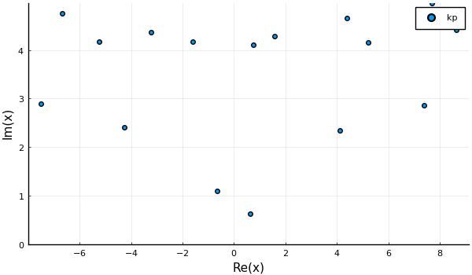

Scattering from a sphere
Here we show how to calculate the average acoustic wave scattered from a sphere filled with particles. We will the analytic solution with an approximation using effective low frequency properties.
Choose the microstructure
using EffectiveWaves, LinearAlgebra
spatial_dim = 3
medium = Acoustic(spatial_dim; ρ=1.0, c=1.0)
s1 = Specie(
Acoustic(spatial_dim; ρ=10.0, c=10.0), Sphere(spatial_dim, 1.0);
volume_fraction=0.15
);
s2 = Specie(
Acoustic(spatial_dim; ρ=0.22, c=0.22), Sphere(spatial_dim, 1.0);
volume_fraction=0.05
);
species = [s1,s2]
# calculate the low frequency effective properties
eff_medium = effective_medium(medium, species)
# choose incident angular frequency
ω = 0.22
# choose maximum order of the spherical harmonic for scattered waves from particles
basis_order = 2
# choose a numerical tolerance
tol = 1e-7
# calculate the effective wavenumbers which are valid for any frequency low frequency effective properties
opts = Dict(
:num_wavenumbers => 2, # calculate at least 3 wavenumbers
:basis_order => basis_order,
:tol => tol
)
# note this is the heaviest calculation in this example
k_effs = wavenumbers(ω, medium, species; opts...)Is one effective wavenumber enough?
To easily calculate scattered waves we need k_effs[1] to have a smaller imaginary part than the other wavenumbers k_effs[2:end]. This is easily checked with a scatter plot
using Plots
pyplot(size = (600, 350))
scatter(k_effs, lab = "kp", ylims = (0.0,Inf))
# savefig("../assets/sphere-wavenumbers.png")
When using only one wavenumber, and excluding the other wavenumber, will lead to an error that is roughly given by
λ = 2π * medium.c / ω
approximate_error = abs(exp(im * λ * k_effs[2]) / exp(im * λ * k_effs[1]))
# output
1.5188e-6 # approximatelyThe precise error depends on the application.
Define the source and material
As we want to calculate effective scattered waves, and not just effective wavenumbers, we need to define a source and material domain. We will choose a plane-wave source, and a sphere for the domain.
# choose an incident wave
# NOTE: having the incident wave direction along the z-axis leads to azimuthal symmetry, which simplifies the next steps.
θ = 0.0
psource = PlaneSource(medium, [sin(θ),0.0,cos(θ)]);
# choose the size and position of the spherical domain of the material
R = 20.0
material = Material(Sphere(spatial_dim, R),species);
# the larger the material region, the larger this basis_field_order needs to be
basis_field_order = 7Calculate the scattered waves
Below we calculate the outward going spherical wave coefficients. These coefficients, multiplied with a basis of outward going waves, will give the scattered field.
# create a sphere using the low frequency effective properties
effective_sphere = Particle(eff_medium, material.shape)
region_order = basis_order + basis_field_order
# calculate the T-matrix, also know as scattering matrix, and take the diagonal
t_mat = t_mat(effective_sphere, medium, ω, region_order);
# calculate the outward going spherical wave coefficients
source_coefficients = regular_spherical_coefficients(psource)(region_order,zeros(3),ω);
scat_low_coefficients = t_mat * source_coefficients
# for the analytic solution, we need the wavemode first
wave = WaveMode(ω, k_effs[1], psource, material;
tol=tol,
basis_order = basis_order,
basis_field_order = basis_field_order
)
# and then the outward spherical wave coefficients
scat_coefficients = material_scattering_coefficients(wave)Calculate the field
xlim = 3.0 * R
ylim = 4.4 * R
# a region to plot
region = Box([[-xlim,-ylim], [xlim,ylim]]);
# a quick fix to make it a 3D region
xs, xinds = points_in_shape(region; res = 180);
xs = [[x[1],0,x[2]] for x in xs];
# Calculate the field for the low frequency effective properties
particles = [Particle(eff_medium,material.shape)]
sim = FrequencySimulation(particles, psource)
fs = field(sim, ω, xs[xinds], scat_low_coefficients);
field_mat = zeros(typeof(fs[1]), length(xs), 1);
field_mat[xinds,:] = fs;
result_low = FrequencySimulationResult(field_mat, xs, [ω])
# Calculate the analytic scattered field
fs = field(sim, ω, xs[xinds], scat_coefficients);
field_mat = zeros(typeof(fs[1]), length(xs), 1);
field_mat[xinds,:] = fs;
result = FrequencySimulationResult(field_mat, xs, [ω])Plot the field
pyplot( frame = :axes,
size = (xlim * 5.0, ylim * 4.0),
flip = false,
xlims = :auto, ylims = :auto,
title="", xlab="ka",ylab="y"
)
plot(result_low, ω, seriestype = :contour, field_apply=abs
, color = :balance # for julia 1.1 change to color = :pu_or
, levels = 16, clims=(0.0,1.65)
, title = "abs low freq. scat"
, axis=false)
plot!(material.shape)
p_scat = plot!(leg = false, frame = :none
,axis=false, xlab="",ylab="")
# savefig("../assets/low-freq-scat-sphere.png")
plot(result,ω, seriestype = :contour, field_apply=abs
, levels = 16, clims=(0.0,1.65)
, title = "abs scattered field"
, color = :balance
, colorbar = false
)
plot!(material.shape)
plot!(leg = false
, axis=false, xlab="",ylab="")
# savefig("../assets/scat-sphere.png")
Plot a gif
Finally, for fun, we plot a GIF of the real part of the full field.
max_c = maximum(abs.(field(result)))
min_c = - max_c
ts = LinRange(0.,2pi/ω,30)
anim = @animate for t in ts
plot(result, ω, seriestype=:contour
, levels = 20
, phase_time=t
, leg = false
, field_apply = real
, clim = (min_c, max_c)
, colorbar = false
, color = :balance
, frame = :none
, title = "Re. full field"
)
plot!(material.shape)
plot!(leg = false, frame = :none
, axis=false, xlab="",ylab="")
end
# gif(anim,"../assets/real-sphere-scatter.gif", fps = 7)
anim = @animate for t in ts
plot(result_low, ω, seriestype=:contour
, levels = 20
, phase_time=t
, leg = false
, field_apply = real
, clim = (min_c, max_c)
, colorbar = false
, color = :balance
, frame = :none
, title = "Re. low freq full field"
)
plot!(material.shape)
plot!(leg = false, frame = :none
, axis=false, xlab="",ylab="")
end
# gif(anim,"../assets/real-sphere-low-scat-scatter.gif", fps = 7)